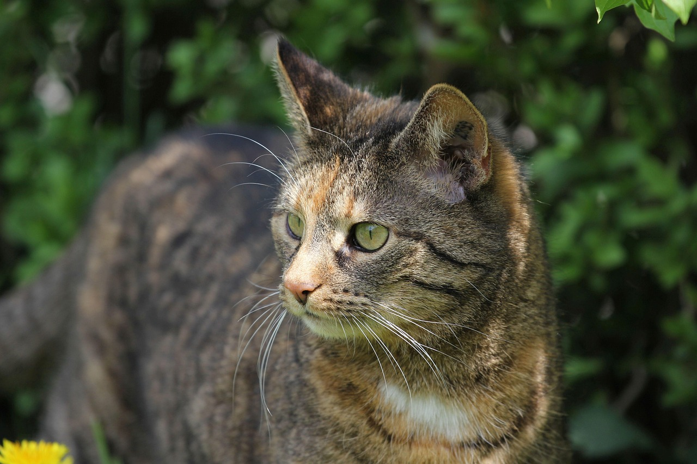

Pochi the Cat
Introduction

Pochi was adopted from an animal shelter and now resides in Seattle
Profile
- favorite food-smoked salmon
- hobbies-watching fishing on ESPN,snaking on garden flowers,monitoring the aprtment parking alot
- hidden talent-Karaoke
Links
Last updated on 24 June 2013 by Pochi the cat